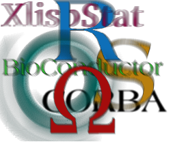

R-related Conferences
The R project actively supports two conferences, organized
regularly by members from the R community: useR! - providing
a forum to the R user community - and DSC - a platform for
developers of statistical software. A rough outline of the format
for the respective conferences is given below; both conference
formats were developed by the Austrian Association for Statistical
Computing (AASC) in cooperation with the R Foundation for
Statistical Computing.
useR! - International R User Conference
 This is the main meeting of the R user and developer community,
its program consisting of both invited and user-contributed
presentations:
This is the main meeting of the R user and developer community,
its program consisting of both invited and user-contributed
presentations:
- The invited keynote lectures cover a broad spectrum of
topics ranging from technical and R-related computing
issues to general statistical topics of current interest.
- The user-contributed presentations are submitted as abstracts
prior to the conference and may be related to (virtually)
any R-related topic. The presentations are typically organized
in sessions of either broad or special interest, which also
comprise a "free" discussion format. Such a discussion format
not only provides a forum for software demonstrations and
detailed discussions but also supports the self-organization
of the respective communities.
Usually, no proceedings are published for useR! conferences.
DSC - Directions in Statistical Computing

DSC is a conference for the developers of statistical software and
researchers in statistical computing which is somewhat focused on but
not exclusively devoted to R. It aims at providing a platform for
exchanging ideas about developments in statistical computing (rather
than `only' the usage of statistical software for applications). As the
associated papers are often technical and difficult to publish even in
computational statistical journals, the DSC publishes post-conference
proceedings of the papers that were accepted for publication.